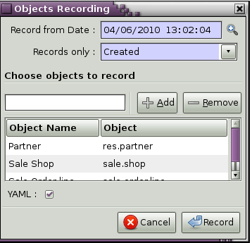

Serialization, Migration and Upgrading
Data Serialization
During OpenERP installation, two steps are necessary to create and feed the database:
- Create the SQL tables
- Insert the different data into the tables
The creation (or modification in the case of an upgrade) of SQL tables is automated thanks to the description of objects in the server.
With OpenERP, everything except the business logic of objects is stored in the database. We find for example:
- the definitions of the reports,
- the default values for fields,
- the definition of client interfaces for each document (views),
- the relationships between menus, buttons and actions
- etc.
There must be a mechanism to describe, modify and reload these different kinds of data. OpenERP data may be specified in CSV, XML or YAML serialization files provided by modules, and loaded during module installation/upgrade in order to fill or update the database tables.
XML Data Serialization
Since version 4.2, OpenERP provides an XML-based data serialization format.
The basic format of an OpenERP XML file is as follows:
<?xml version="1.0"?>
<openerp>
<data>
<record model="model.name_1" id="id_name_1">
<field name="field1">
field1 content
</field>
<field name="field2">
field2 content
</field>
(...)
</record>
<record model="model.name_2" id="id_name_2">
(...)
</record>
(...)
</data>
</openerp>
Fields contents are strings that must be encoded as UTF-8 in XML files.
Let's review an example taken from the OpenERP source (base_demo.xml in the base module):
<record model="res.company" id="main_company">
<field name="name">OpenERP SA</field>
<field name="partner_id" ref="main_partner"/>
<field name="currency_id" ref="EUR"/>
</record>
<record model="res.users" id="user_admin">
<field name="login">admin</field>
<field name="password">admin</field>
<field name="name">Administrator</field>
<field name="signature">Administrator</field>
<field name="action_id" ref="action_menu_admin"/>
<field name="menu_id" ref="action_menu_admin"/>
<field name="address_id" ref="main_address"/>
<field name="groups_id" eval="[(6,0,[group_admin])]"/>
<field name="company_id" ref="main_company"/>
</record>
This last record defines the admin user :
- The fields login, password, etc are straightforward.
- The ref attribute allows to fill relations between the records :
<field name="company_id" ref="main_company"/>
Thecompany_id field is a many-to-one relation from the user object to the company object, and main_company is the id of to associate.
- The eval attribute allows to put some python code in the xml: here the groups_id field is a many2many. For such a field, "[(6,0,[group_admin])]" means : Remove all the groups associated with the current user and use the list [group_admin] as the new associated groups (and group_admin is the id of another record).
- The search attribute allows to find the record to associate when you do not know its xml id. You can thus specify a search criteria to find the wanted record. The criteria is a list of tuples of the same form than for the predefined search method. If there are several results, an arbitrary one will be chosen (the first one):
<field name="partner_id" search="[]" model="res.partner"/>
This is a classical example of the use of search in demo data: here we do not really care about which partner we want to use for the test, so we give an empty list. Notice the model attribute is currently mandatory.
Some typical XML elements are described below.
Record Tag
The addition of new data is made with the record tag. This one takes a mandatory attribute : model. Model is the object name where the insertion has to be done. The tag record can also take an optional attribute: id. If this attribute is given, a variable of this name can be used later on, in the same file, to make reference to the newly created resource ID.
A record tag may contain field tags. They indicate the record's fields value. If a field is not specified the default value will be used.
Example
<record model="ir.actions.report.xml" id="l0">
<field name="model">account.invoice</field>
<field name="name">Invoices List</field>
<field name="report_name">account.invoice.list</field>
<field name="report_xsl">account/report/invoice.xsl</field>
<field name="report_xml">account/report/invoice.xml</field>
</record>
field tag
The attributes for the field tag are the following:
-
name
: o mandatory attribute indicating the field name
-
eval
: o python expression that indicating the value to add
-
ref
: o reference to an id defined in this file
function tag
- model:
- name:
- eval: o should evaluate to the list of parameters of the method to be called, excluding cr and uid
Example
<function
model="ir.ui.menu"
name="search"
eval="[[('name','=','Operations')]]"/>
getitem tag
Takes a subset of the evaluation of the last child node of the tag.
- type: - int or list
- index
- int or string (a key of a dictionary)
Example
Evaluates to the first element of the list of ids returned by the function node:
<getitem index="0" type="list">
<function
model="ir.ui.menu"
name="search"
eval="[[('name','=','Operations')]]"/>
</getitem>
YAML Data Serialization
YAML is a human-readable data serialization format that takes concepts from programming languages such as C, Perl, and Python, and ideas from XML and the data format of electronic mail. YAML stands for YAML Ain't Markup Language (yes, that's a recursive acronym). YAML is available as a format for OpenERP data as of OpenERP 6.0, featuring the following advantages:
- User friendly format as an alternative to our current XML data format.
- Same system to load data or tests, integrated in modules.
- Built in OpenERP so that you can develop complex Python tests.
- Simpler for non developers to write functional tests.
The following section compares an XML record with an equivalent YAML record.
First the XML Record using the current XML serialization format (see previous section <xml-serialization>)
<!--
Resource: sale.order
-->
<record id="order" model="sale.order">
<field name="shop_id" ref="shop"/>
<field model="product.pricelist" name="pricelist_id" search="[]"/>
<field name="user_id" ref="base.user_root"/>
<field model="res.partner" name="partner_id" search="[]"/>
<field model="res.partner.address" name="partner_invoice_id search="[]"/>
<field model="res.partner.address" name="partner_shipping_id" search="[]"/>
<field model="res.partner.address" name="partner_order_id" search="[]"/>
</record>
<!--
Resource: sale.order.line
-->
<record id="line" model="sale.order.line">
<field name="order_id" ref="order"/>
<field name="name">New server config + material</field>
<field name="price_unit">123</field>
</record>
<record id="line1" model="sale.order.line">
<field name="order_id" ref="order"/>
<field name="name">[PC1] Basic PC</field>
<field name="price_unit">450</field>
</record>
YAML Record
#<!--
# Resource: sale.order
# -->
-
!record {model: sale.order, id: sale_order_so4}:
amount_total: 3263.0
amount_untaxed: 3263.0
create_date: '2010-04-06 10:45:14'
date_order: '2010-04-06'
invoice_quantity: order
name: SO001
order_line:
- company_id: base.main_company
name: New server config + material
order_id: sale_order_so4
price_unit: 123.0
- company_id: base.main_company
name: '[PC1] Basic PC'
order_id: sale_order_so4
price_unit: 450.0
order_policy: manual
partner_id: base.res_partner_agrolait
partner_invoice_id: base.main_address
partner_order_id: base.main_address
partner_shipping_id: base.main_address
picking_policy: direct
pricelist_id: product.list0
shop_id: sale.shop
YAML Tags
data
- Tag: data
- Compulsory attributes: None
- Optional attributes: noupdate : 0 | 1
- Child_tags:
- menuitem
- record
- workflow
- delete
- act_window
- assert
- report
- function
- ir_set
- Example: :
- !context noupdate: 0
record
- Tag: record
**Compulsory attributes**:
: - model
- Optional attributes: noupdate : 0 | 1
**Child\_tags**:
: - field
-
Optional attributes:
: - id - forcreate - context
-
Example: :
- !record {model: sale.order, id: order}: name: "[PC1] Basic PC" amount_total: 3263.0 type_ids: - project_tt_specification - project_tt_development - project_tt_testing order_line: - name: New server config order_id: sale_order_so4 - name: '[PC1] Basic PC' order_id: sale_order_so4
field
- Tag: field
**Compulsory attributes**:
: - name
-
Optional attributes:
: - type - ref - eval - domain - search - model - use
-
Child_tags:
: - text node
-
Example: :
-price_unit: 450 -product_id: product.product_product_pc1
workflow
- Tag: workflow
**Compulsory attributes**:
: - model
- action
-
Optional attributes:
: - uid - ref
-
Child_tags:
: - value
-
Example: :
- !workflow {action: invoice_open, model: account.invoice}: - eval: "obj(ref('test_order_1')).invoice_ids[0].id" model: sale.order - model: account.account search: [('type', '=', 'cash')]
function
- Tag: function
**Compulsory attributes**:
: - model
- name
-
Optional attributes:
: - id - eval
-
Child_tags:
: - value - function
-
Example: :
- !function {model: account.invoice, name: pay_and_reconcile}: -eval: "[obj(ref('test_order_1')).id]" model: sale.order
value
- Tag: value
- Compulsory attributes: None
-
Optional attributes:
: - model - search - eval
-
Child_tags: None
- Example: :
-eval: "[obj(ref('test_order_1')).id]" model: sale.order
menuitem
- Tag: menuitem
- Compulsory attributes: None
-
Optional attributes:
: - id - name - parent - icon - action - string - sequence - groups - type - menu
-
Child_tags: None
- Example: :
- !menuitem {sequence: 20, id: menu_administration, name: Administration, icon: terp-administration}
act_window
- Tag: act_window
**Compulsory attributes**:
: - id
- name
- res\_model
-
Optional attributes:
- domain
- src_model
- context
- view
- view_id
- view_type
- view_mode
- multi
- target
- key2
- groups
-
Child_tags: None
- Example: :
- !act_window {target: new, res_model: wizard.ir.model.menu.create, id:act_menu_create, name: Create Menu}
report
- Tag: report
**Compulsory attributes**:
: - string
- model
- name
-
Optional attributes:
- id
- report
- multi
- menu
- keyword
- rml
- sxw
- xml
- xsl
- auto
- header
- attachment
- attachment_use
- groups
-
Child_tags: None
- Example: :
- !report {string: Technical guide, auto: False, model: ir.module.module, id: ir_module_reference_print, rml: base/module/report/ir_module_reference.rml, name: ir.module.reference}
ir_set
- Tag: ir_set
- Compulsory attributes: None
- Optional attributes: None
-
Child_tags:
: - field
-
Example: :
- !ir_set: args: "[]" name: account.seller.costs value: tax_seller
python
- Tag: Python
**Compulsory attributes**:
: - model
- Optional attributes: None
- Child_tags: None
- Example: :
Python code
delete
- Tag: delete
**Compulsory attributes**:
: - model
-
Optional attributes:
: - id - search
-
Child_tags: None
- Example: :
- !delete {model: ir.actions, search: "[(model,like,auction.)]"}
assert
- Tag: assert
**Compulsory attributes**:
: - model
-
Optional attributes:
: - id - search - string
-
Child_tags:
: - test
-
Example: :
- !assert {model: sale.order, id: test_order, string: order in progress}: - state == "progress"
test
- Tag: test
**Compulsory attributes**:
: - expr
- Optional attributes: None
**Child\_tags**:
: - text node
- Example:
- picking_ids[0].state == "done"
url
- Tag: url
- Compulsory attributes: -
- Optional attributes: -
- Child_tags: -
- Example: -
Writing YAML Tests
Write manually
: - Record CRUD - Workflow transition - Assertions (one expression like in XML) - Pure Python code
Use base_module_record(er)
- Generate YAML file with record and workflow

- Update this YAML with assertions / Python code
Field Tag
-
text
: -
text with special characters at beginning or at end must be enclosed with double quotes. : **Ex: name: "\[PC1\] Basic PC"** -
integer and float
: Ex: price_unit: 450 Ex: amount_total: 3263.0
-
boolean
: active: 1
-
datetime
: date_start: str(time.localtime()[0] - 1) + -08-07
-
selection
: -
give the shortcut : **Ex: title: M.** -
many2one
: -
if its a reference to res\_id, specify the res\_id : **Ex: user\_id: base.user\_root** - if its value is based on search criteria specify the model to search on and the criteria : **Ex: object\_id: !ref {model: ir.model, search: "\[('model','=','crm.claim')\]”}** -
one2many
: -
start each record in one2many field on a new line with a space and a hyphen : **Ex: order\_line:** **name: New server config** **order\_id: sale\_order\_so4** **......** **name: '\[PC1\] Basic PC'** **order\_id: sale\_order\_so4** **......** -
many2many
: -
start each record in many2many field with a space and a hyphen : **Ex: type\_ids:** **- project\_tt\_specification** **- project\_tt\_development** **- project\_tt\_testing**
Value tag
-
if the value can be evaluated(like res_id is available), we write value tag as follows:
: - !function {model: account.invoice, name: pay_and_reconcile}: - eval: "obj(ref('test_order_1')).amount_total" model: sale.order
This will fetch the 'amount\_total' value of a 'sale.order' record with res\_id 'test\_order\_1' -
If the value is to be searched on some model based on a criteria, we write value tag as follows:
: - !function {model: account.invoice, name: pay_and_reconcile}: - model: account.account search: "[('type', '=', 'cash')]" This will fetch all those account.account records whose type is equal to 'cash'
Test Tag
-
specify the test directly
: Ex: - picking_ids[0].state == "done" - state == "manual"
comment
#<!-- Resource: sale.order -->
Asserts and Python code
To create an invoice, python code could be written as:
-
:
**!python {model: account.invoice}: |**
: **self.action\_move\_create(cr, uid, \[ref("invoice1")\])**
The invoice must be in draft state:
-
:
**!assert {model: account.invoice , id: invoice1, string: "the invoice is now in Draft state"}:**
: **- state == "draft"**
To test that all account are in a tree data structure, we write the below python code:
-
:
**!python {model: account.account}:**
: **ids = self.search(cr, uid, \[\])**
**accounts\_list = self.read(cr, uid, ids\['parent\_id','parent\_left','parent\_right'\])**
**accounts = dict((x\['id'\], x) for x in accounts\_list)**
**log("Testing parent structure for %d accounts", len(accounts\_list))**
**for a in accounts\_list:**
:
**if a\['parent\_id'\]:**
: **assert a\['parent\_left'\]>accounts\[a\['parent\_id'\]\[0\]\]\['parent\_left'\]**
**assert a\['parent\_right'\]<accounts\[a\['parent\_id'\]\[0\]\]\['parent\_right'\]**
**assert a\['parent\_left'\]<a\['parent\_right'\]**
**for a2 in accounts\_list:**
> **assert not ((a2\['parent\_right'\]>a\['parent\_left'\])and**
>
> : **(a2\['parent\_left'\]<a\['parent\_left'\])and**
>
> **(a2\['parent\_right'\]<a\['parent\_right'\]))**
>
> **if a2\['parent\_id'\]==a\['id'\]:**
>
> : **assert(a2\['parent\_left'\]>a\['parent\_left'\])and(a2\['parent\_right'\]<a\['parent\_right'\])**
>
Running tests
- Save the file with '.yml' extension
- Add the yaml file under 'demo_xml' in terp file
- Run the server with '--log-level=test' option
CSV Data Serialization
Since version 4.2, OpenERP provides a Comma-Separated-Values (CSV), spreadsheet-compatible data serialization format.
The basic format of an OpenERP CSV file is as follows:
"id","name","model_id:id","group_id:id","perm_read","perm_write","perm_create","perm_unlink"
"access_product_uom_categ_manager","product.uom.categ manager","model_product_uom_categ","product.group_product_manager",1,1,1,1
"access_product_uom_manager","product.uom manager","model_product_uom","product.group_product_manager",1,1,1,1
"access_product_ul_manager","product.ul manager","model_product_ul","product.group_product_manager",1,1,1,1
"access_product_category_manager","product.category manager","model_product_category","product.group_product_manager",1,1,1,1
"access_product_template_manager","product.template manager","model_product_template","product.group_product_manager",1,1,1,1
"access_product_product_manager","product.product manager","model_product_product","product.group_product_manager",1,1,1,1
"access_product_packaging_manager","product.packaging manager","model_product_packaging","product.group_product_manager",1,1,1,1
"access_product_uom_categ_user","product.uom.categ.user","model_product_uom_categ","base.group_user",1,0,0,0
"access_product_uom_user","product.uom.user","model_product_uom","base.group_user",1,0,0,0
"access_product_ul_user","product.ul.user","model_product_ul","base.group_user",1,0,0,0
"access_product_category_user","product.category.user","model_product_category","base.group_user",1,0,0,0
"access_product_template_user","product.template.user","model_product_template","base.group_user",1,0,0,0
"access_product_product_user","product.product.user","model_product_product","base.group_user",1,0,0,0
"access_product_packaging_user","product.packaging.user","model_product_packaging","base.group_user",1,0,0,0
Importing from a CSV
Instead of using .XML file, you can import .CSV files. It is simpler but the migration system does not migrate the data imported from the .CSV files. It's like the noupdate attribute in .XML files. It's also more difficult to keep track of relations between resources and it is slower at the installation of the server.
Use this only for [demo] data that will never been upgraded from one version of OpenERP to another.
The name of the object is the name of the CSV file before the first '-'. You must use one file per object to import. For example, to import a file with partners (including their multiple contacts and events), the file must be named like one of the following example:
- res.partner.csv
- res.partner-tiny_demo.csv
- res.partner-tiny.demo.csv
Structure of the CSV file
- Separator to use:
, - Quote character for strings:
"(optional if no separator is found in field values) - Encoding to use:
UTF-8 - No whitespace allowed around separators if not using quote characters
- Be sure to configure your CSV export software (e.g. spreadsheet editor) with the above parameters
Exporting demo data and import it from a module
You can import .CSV file that have been exported from the OpenERP client. This is interesting to create your own demo module. But both formats are not exactly the same, mainly due to the conversion: Structured Data -> Flat Data -> Structured Data.
-
The name of the column (first line of the .CSV file) use the end user term in his own language when you export from the client. If you want to import from a module, you must convert the first column using the fields names. Example, from the partner form:
Name,Code,Contacts/Contact Name,Contacts/Street,Contacts/Zipbecomes:
name,ref,address/name,address/street,address/zip -
When you export from the OpenERP client, you can select any many2one fields and their child's relation. When you import from a module, OpenERP tries to recreate the relations between the two resources. For example, do not export something like this from a sale order form - otherwise OpenERP will not be able to import your file:
Order Description,Partner/Name,Partner/Payable,Partner/Address/Name -
To find the link for a many2one or many2many field, the server uses the name_search function when importing. So, for a many2one field, it is better to export the field 'name' or 'code' of the related resource only. Use the more unique one. Be sure that the field you export is searchable by the name_search function. (the 'name' column is always searchable):
Order Description,Partner/Code -
Change the title of the column for all many2many or many2one fields. It's because you export the related resource and you import a link on the resource. Example from a sale order: Partner/Code should become partner_id and not partner_id/code. If you kept the
/code, OpenERP will try to create those entries in the database instead of finding references to existing ones. -
Many2many fields. If all the exported data contains 0 or 1 relation on each many2many fields, there will be no problem. Otherwise, the export will result in one line per many2many. The import function expects to get all many2many relations in one column, separated by a comma.
So, you have to make the transformation. For example, if the categories "Customer" and "Supplier" already exists:
name,category_id Smith, "Customer, Supplier"If you want to create these two categories you can try :
name,category_id/name Smith, "Customer, Supplier"But this does not work as expected: a category "Customer, Supplier" is created. The solution is to create an empty line with only the second category:
name,category_id/name Smith, Customer ,SupplierNote the comma before "Supplier"!
-
Read only fields. Do not try to import read only fields like the amount receivable or payable for a partner. Otherwise, OpenERP will not accept to import your file.
- Exporting trees. You can export and import tree structures using the parent field. You just have to take care of the import order. The parent have to be created before his child's.
Use record id like in xml file
It's possible to define an id for each line of the csv file. This allow to define references between records:
id, name, parent_id:id record_one, Father, record_two, Child, record_one
If you do this, the line with the parent data must be before the child lines in the file.
Multiple CSV Files
Importing from multiple CSV a full group of linked data
It's possible to import a lot of data, with multiple CSV files imported as a single operation. Assume we have a database with books and authors with a relation many2many between book and author.
And that you already have a file with a lot of books (like a library) and an other file with a lot of authors and a third file with the links between them.
How to import that easily in openERP ?
Definition of an import module
You can do this in the module you have defined to manage yours books and authors. but Sometimes, the tables to import can also be in several modules.
For this example, let's say that 'book' object is defined in a module called 'library_management' and that 'Author' object in a module called 'contact_name'.
In this case, you can create a 'fake' module, just to import the data for all these multiples modules. Call this importation module : 'import_my_books'.
You create this module as others modules of OpenObject :
- create a folder 'import_my_books'
- inside, create a '__init__.py' file with only one line : import import_my_books
- again, in the same folder, create a '__openerp__.py' file and in this file, write the following code :
# -*- encoding: utf-8 -*-
{
'name': 'My Book Import',
'category': 'Data Module 1',
'init_xml':[],
'author': 'mySelf & I',
'depends': ['base','library_management','contact_name'],
'version': '1.0',
'active': False,
'demo_xml': [],
'update_xml':['contact_name.author.csv','library.book.csv'],
'installable': True
}
Creation of CSV files
For the CSV files, you'll import one after the other.
So you have to choose in which way you'll treat the many2many relation. For our example, we've choose to import all the authors, then all the books with the links to the authors.
- authors CSV file
You have to put your data in a CSV file without any link to books (because the book ids will be known only AFTERWARDS...) For example : ("contact_name.author.csv")
id,last_name,first_name,type
author_1,Bradley,Marion Zimmer,Book writer
author_2,"Szu T'su",,Chinese philosopher
author_3,Zelazny,Roger,Book writer
author_4,Arleston,Scotch,Screen Writer
author_5,Magnin,Florence,Comics Drawer
...
- Books CSV file
Here, you can put the data about your books, but also, the links to the authors, using the same id as the column 'id' of the author CSV file. For example : ("library.book.csv" )
id,title,isbn,pages,date,author_ids:id
book_a,Les Cours du Chaos,1234567890123,268,1975-12-25,"author_3"
book_b,"L'art de la Guerre, en 219 volumes",1234567890124,1978-01-01,"author_2"
book_c,"new marvellous comics",1587459248579,2009-01-01,"author_5,author_4"
...
Five remarks :
- the field content must be enclosed in double quotes (") if there is a double quote or a comma in the field.
- the dates are in the format YYYY-MM-DD
- if you have many ids in the same column, you must separate them with a comma, and, by the way, you must enclosed the content of the column between double quotes...
- the name of the field is the same as the name of the field in the class definition AND must be followed by ':id' if the content is an ID that must be interpreted by the import module. In fact, "author_4" will be transformed by the import module in an integer id for the database module and this numerical id will be put also in the table between author and book, not the literal ID (author_4).
- the encoding to be used by the CSV file is the 'UTF-8' encoding
Data Migration - Import / Export
Data Importation
Introduction
There are different methods to import your data into OpenERP:
- Through the web-service interface
- Using CSV files through the client interface
- Building a module with .XML or .CSV files with the content
- Directly into the SQL database, using an ETL
Importing data through a module
The best way to import data in OpenERP is to build a module that integrates all the data you want to import. So, when you want to import all the data, you just have to install the module and OpenERP manages the different creation operations. When you have lots of different data to import, we sometimes create different modules.
So, let's create a new module where we will store all our data. To do this, from the addons directory, create a new module called data_yourcompany.
- mkdir data_yourcompany
- cd data_yourcompany
- touch __init__.py
You must also create a file called __openerp__.py in this new module. Write the following content in this module file description.
{
'name': 'Module for Data Importation',
'version': '1.0',
'category': 'Generic Modules/Others',
'description': "Sample module for data importation.",
'author': 'Tiny',
'website': 'http://www.openerp.com',
'depends': ['base'],
'init_xml': [
'res.partner.csv',
'res.partner.address.csv'
],
'update_xml': [],
'installable': True,
'active': False,
}
The following module will import two different files:
- res.partner.csv : a CSV file containing records of the res.partner object
- res.partner.address.csv : a CSV file containing records of the res.partner.address object
Once this module is created, you must load data from your old application to .CSV file that will be loaded in OpenERP. OpenERP has a builtin system to manage identifications columns of the original software.
For this exercise, we will load data from another OpenERP database called old. As this database is in SQL, it's quite easy to export the data using the command line postgresql client: psql. As to get a result that looks like a .CSV file, we will use the following arguments of psql:
- -A : display records without space for the row separators
- -F , : set the separator character as ','
- --pset footer : don't write the latest line that looks like "(21 rows)"
When you import a .CSV file in OpenERP, you can provide a 'id' column that contains a uniq identification number or string for the record. We will use this 'id' column to refer to the ID of the record in the original application. As to refer to this record from a many2one field, you can use 'FIELD_NAME:id'. OpenERP will re-create the relationship between the record using this uniq ID.
So let's start to export the partners from our database using psql: :: :
psql trunk -c "select 'partner_'||id as id,name from res_partner"
-A -F , --pset footer > res.partner.csv
This creates a res.partner.csv file containing a structure that looks like this:
id,name
partner_2,ASUStek
partner_3,Agrolait
partner_4,Camptocamp
partner_5,Syleam
By doing this, we generated data from the res.partner object, by creating a uniq identification string for each record, which is related to the old application's ID.
Now, we will export the table with addresses (or contacts) that are linked to partners through the relation field: partner_id. We will proceed in the same way to export the data and put them into our module:
psql trunk -c "select 'partner_address'||id as id,name,'partner_'||
partner_id as \"partner_id:id\" from res_partner_address"
-A -F , --pset footer > res.partner.address.csv
This should create a file called res.partner.address with the following data:
id,name,partner_id:id
partner_address2,Benoit Mortier,partner_2
partner_address3,Laurent Jacot,partner_3
partner_address4,Laith Jubair,partner_4
partner_address5,Fabien Pinckaers,partner_4
When you will install this module, OpenERP will automatically import the partners and then the address and recreate efficiently the link between the two records. When installing a module, OpenERP will test and apply the constraints for consistency of the data. So, when you install this module, it may crash, for example, because you may have different partners with the same name in the system. (due to the uniq constraint on the name of a partner). So, you have to clean your data before importing them.
If you plan to upload thousands of records through this technique, you should consider using the argument '-P' when running the server.
openerp_server.py -P status.pickle --init=data_yourcompany
This method provides a faster importation of the data and, if it crashes in the middle of the import, it will continue at the same line after rerunning the server. This may preserves hours of testing when importing big files.
Using OpenERP's ETL
The next version of OpenERP will include an ETL module to allow you to easily manages complex import jobs. If you are interested in this system, you can check the complete specifications and the available prototype at this location:
bzr branch lp:\~openerp-commiter/openobject-addons/trunk-extra-addons/etl
... to be continued ...
Data Loading
During OpenERP installation, two steps are necessary to create and feed the database:
- Create the SQL tables
- Insert the different data into the tables
The creation (or modification in the case of an upgrade) of SQL tables is automated thanks to the description of objects in the server.
Into OpenERP, all the logic of the application is stored in the database. We find for example:
- the definitions of the reports,
- the object default values,
- the form description of the interface client,
- the relations between the menu and the client buttons, ...
There must be a mechanism to describe, modify and reload the different data. These data are represented into a set of XML files that can possibly be loaded during start of the program in order to fill in the tables.
Upgrading
Upgrading Server, Modules
The upgrade from version to version is automatic and doesn't need any special scripting on the user's part. In fact, the server is able to automatically rebuild the database and the data from a previously installed version.
The tables are rebuilt from the current module definitions. To rebuild the tables, the server uses the definition of the objects and adds / modifies database fields as necessary.
To invoke a database upgrade after installing a new version, you need to start the server with the --update=all argument :
openerp-server.py --update=all
You can also only upgrade specific modules, for example:
openerp-server.py --update=account,base
The database is rebuilt according to information provided in XML files and Python Classes. You can also execute the server with --init=all. The server will then rebuild the database according to the existing XML files on the system, delete all existing data and return OpenERP to its basic configuration.
Detailed update operations
OpenERP has a built-in migration and upgrade system which allows updates to be nearly (or often) automatic. This system also allows to easily include custom modules.
Table/Object structure
When you run openerp-server with option --init or --update, the table structure is updated to match the new description that is in Python code. Fields that are removed from Python code are not removed from the postgresql database to avoid losing data.
So, simply running with --update or --init, will upgrade your table structure.
It's important to run --init=module the first time you install the module. Next time, you must use the --update=module argument instead of the init one. This is because --init loads resources that are loaded only once and never upgraded (i.e., resources with no id="" attribute or within a <data noupdate="1"> tag). Resources with the noupdate attribute will still be created if they do not exist at upgrade time. This can be overridden by marking a record with forcecreate="False".
Data
Some data is automatically loaded at the installation of OpenERP:
- views, actions, menus,
- workflows,
- demo data
This data is also migrated to a new version if you run --update or --init.
Workflows
Workflows are also upgraded automatically. If some activities are removed, the documents states evolves automatically to the preceding activities. That ensure that all documents are always in valid states.
You can freely remove activities in your XML files. If workitems are in this activity, they will evolve to the preceding unlinked activity. And after the activity will be removed.
Things to care about during development
Since version 3.0.2 of OpenERP, you can not use twice the same 'id="..."' during resource creation in your XML files, unless they are in two different modules.
Resources which don't contain an id are created (and updated) only once; at the installation of the module or when you use the --init argument.
If a resource has an id and this resource is not present anymore in the next version of the XML file, OpenERP will automatically remove it from the database. If this resource is still present, OpenERP will update the modifications to this resource.
If you use a new id, the resource will be automatically created at the next update of this module.
Use explicit id declaration !, Example:
- view_invoice_form,
- view_move_line_tree,
- action_invoice_form_open, ...
It is important to put id="...." to all record that are important for the next version migrations. For example, do not forget to put some id="..." on all workflows transitions. This will allows OpenERP to know which transition has been removed and which transition is new or updated.
Custom modules
For example, if you want to override the view of an object named 'invoice_form' in your xml file (id="invoice_form"). All you have to do is redefine this view in your custom module with the same id. You can prefix ids with the name of the module to reference an id defined in another module.
Example:
<record model="ir.ui.view" id="account.invoice_form"> ... <record>
This will override the invoice form view. You do not have to delete the old view, like in 3.0 versions of OpenERP.
Note that it is often better to use view inheritance instead of overwriting views.
In this migration system, you do not have to delete any resource. The migration system will detect if it is an update or a delete using id="..." attributes. This is important to preserve references during migrations.
Demo data
Demo data does not have to be upgraded; because it was probably modified or deleted by users. To avoid demo data being upgraded you can put a noupdate="1" attribute in the <data> tag of your .xml data files.
Summary of update and init process
init: modify/add/delete demo data and built-in data
update: modify/add/delete non demo data
Examples of built-in (non demo) data:
- Menu structure,
- View definition,
- Workflow description, ...
- Everything that has an id attribute in the XML data declaration (if no attr noupdate="1" in the header)
What's going on during the update process:
-
If you manually added data within the client
- the update process will not change them
-
If you dropped data
- if it was demo data, the update process will do nothing
- if it was built-in data (like a view), the update process will recreate it
-
If you modified data (either in the .XML or the client)
- if it's demo data: nothing
- if it's built-in data, data are updated
-
If built-in data have been deleted in the .XML file
- this data will be deleted in the database.